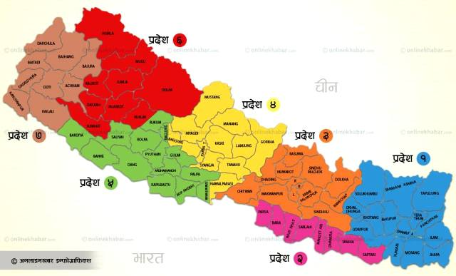
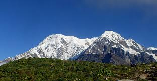
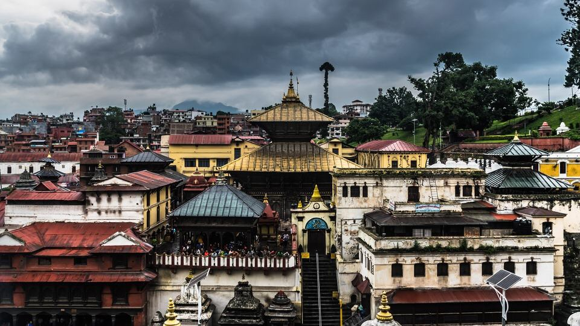

About my country of origin
Nepal is a beautiful country in the laps of the
Himalayas and is well known all over as a world.
Nepal is the country of Lord Buddha,it is
the homeland of the brave Gorkhas, a country
bestowed with maximum cultural and natural decorum.
Very few places on earth can rival the beauty and
rarity of Nepal. The beautiful snowcapped mountains
in the north, the high and lowland valleys and the plain,
fertile land of the Terai all these have proved
to be a boon of nature to Nepal.
Himalaya

Nepali Himalaya, great mountain system of Asia
forming a barrier between the Plateau of Tibet to the north
and the alluvial plains of the Indian subcontinent to the
south. The Himalayas include the highest mountains in the
world, with more than 110 peaks rising to elevations of
24,000 feet (7,300 metres) or more above sea level. One of
those peaks is Mount Everest (Tibetan: Chomolungma; Chinese:
Qomolangma Feng; Nepali: Sagarmatha), the world’s highest,
with an elevation of 29,035 feet (8,850 metres; see
Researcher’s Note: Height of
PasupathiNath Temple

Edicated to Lord Shiva, Pashupatinath is one of the four
most important religious sites in Asia for devotees of
Shiva. Built in the 5th century and later renovated by
Malla kings, the site itself is said to have existed
from the beginning of the millennium when a Shiva lingam
was discovered here.
The largest temple complex in Nepal, it stretches on both
sides of the Bagmati River which is considered holy by Hindus.
The main pagoda style temple has a gilded roof, four sides
covered in silver, and wood carvings of the finest quality.
Temples dedicated to several other Hindu and Buddhist deities
surround the temple of Pashupatinath.